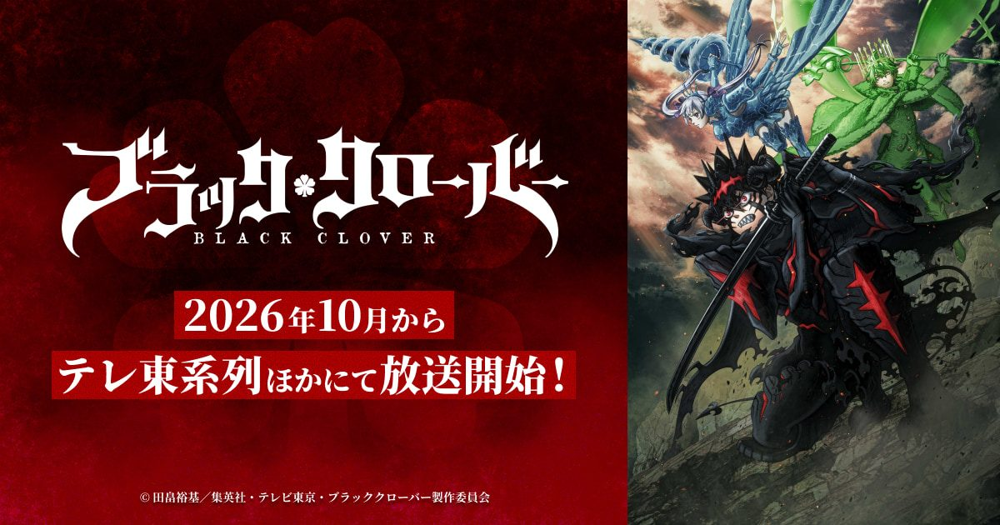

2026-08-22 · 动漫深读
2026 年 10 月，《黑色五叶草》2nd Season 将在东京电视系开播。距离 2021 年 3 月旧作在第 170 集、Spade Kingdom Raid 篇打到一半时戛然而止，已经过去了五年多。更有意思的是：原作者田畠裕基的漫画已经在 2026 年 4 月正式完结（最终卷 8 月 4 日发售，全 38 卷）。换句话说，这一季动画回来时，手里攥着的是一个已经写完结局的完整原作——这在长篇热血少年漫的动画化历史里，几乎是奢侈的配置。

先泼一盆冷水：五年停更，锅不全在动画那边。2017—2021 年的 TV 版之所以在 Spade 篇中途切掉，表面是"追上了漫画"，但漫画自己从 2023 年 12 月就因为作者健康原因从《周刊少年 JUMP》挪到了季刊《JUMP GIGA》，一年只更几话，等于两头都半死不活。所以这次回归的关键词不是"复活"，而是两端同时补齐：漫画在 2026 年 4 月画到 392 话收官，动画才敢把"做到结局"写进宣发。
Jump Festa 2026（2025 年 12 月）首次官宣"2nd Season"，7 月 2 日公开主视觉——阿斯塔的恶魔同化·斩魔姿态居中，尤诺风精灵降临、诺艾尔瓦尔基里礼装分列两侧，标语"我将击溃你，活下去"。Crunchyroll 拿下日本以外全球独播，Anime Expo 2026 的 7 月 4 日还搞了第一集全球抢先上映。这套排面，已经不是"补完遗愿"，而是当成一部新作在推。
剧情锚点：Spade Kingdom Raid 篇（漫画约 270—331 话）。旧作停在第 170 集，正好是"准备出兵救援"的节点；2nd Season 直接接着打——魔法骑士团跨过国境，从 Dark Triad（三巨头恶魔附身统治者）手里抢回被掳走的夜见和威廉，破坏通向冥界的 Qliphoth 之树仪式。阿斯塔的恶魔同化（Devil Union）、尤诺的星魔法觉醒、诺艾尔的魔法进化，都会在这一季集中爆发。
制作班底：换导演但不换血。新任监督是种村绫隆（Ayakata Tanemura）——他正是旧作最强段落（153—170 集）和 2023 年剧场版《 Sword of the Wizard King 》的导演，吉原丈二降为关键原画师。系列构成大桥一恭、角色设计武内伊津子+德永久美子留任。等于说，接手的人是"已经证明能把这个 IP 拍高潮"的人，而不是空降外来者。音乐换成关美奈子（接替前作的和田薰体系）。
模式升级：从周更改成 seasonal。和《死神 千年血战篇》一样，2nd Season 不再是"边播边做"的周更流水线，而是季度集中制作。官方放出的 Jump Festa 预告里，法术特效明显更密、动作更稳、色彩对比更狠——这是五年技术沉淀最直接的证据。OP 确定由 WANIMA 演唱《消えない理由》，还配了一支 10 分钟的第一季回顾短片帮新观众上车。
我们见过太多"动画追原作→被迫原创 filler→口碑崩盘"的惨案。《黑色五叶草》旧作 170 集里，中段确实被节奏问题拖累过。但这一季的牌面完全不同：原作已完结，无 filler 可灌，无"追上后瞎编"的风险。制作组可以倒着排——先知道结局怎么收，再决定每一话的节拍。这种"倒叙式排期"在少年漫里极少见，是它最被低估的优势。
更深一层：2026 年的秋季档，是近年最卷的一档。同月对打的就有《Tokyo Revengers：三神之战篇》《药屋少女的呢喃 第三期》《迷宫饭》级别的强敌，还有《Shangri-La Frontier 第三季》《Steel Ball Run》。黑色五叶草想突围，靠的不是"情怀"，而是五年积压的需求 + 完整剧本 + 电影级制作三件套。它也恰好踩中了一个行业信号：长篇热血少年漫正集体进入"完结/终章化"阶段（咒术回战最终章、死神 TYBW、黑色五叶草终章），"把没讲完的打完"成了 2026 年的主旋律。
我们的评分：8.7 / 10。扣的那 1.3 分，是留给"秋季档太挤导致首播热度被稀释"和"五年空窗后观众是否还买账"的不确定性。但就题材稀缺度（完结后无 filler 完整体）和制作诚意而言，这是 2026 年最值得回坑的老 IP 之一。
我们的观察：种村绫隆接棒是这季最大的定心丸。旧作 153—170 集正是 Spade 篇开头的高光段，由同一个人把这段拍完，等于"最懂这段戏的人终于拿到了完整时间"。
我们的观点："五年停更"在社交平台上是嘲点，在制作逻辑上反而是礼物。如果 2021 年硬着头皮续，只会再灌几十集 filler；拖到原作完结，反而把劣势反转成"一次讲完"的卖点。这给所有腰斩/停更 IP 上了一课：有时候"晚"比"赶"更值钱。
我们的案例 / 对比：对比《死神 TYBW》——同样是从"半成品"重启、同样走 seasonal 高精度路线、同样由原班监督收尾，黑色五叶草几乎是死神路线的翻版验证。再对比《咒术回战》：前者靠"完结后整体动画化"吃红利，后者靠"最终章一次性放出"，殊途同归。
我们的实验：我们用"10 分钟回顾短片 + 剧场版《Sword of the Wizard King》"做了一套最小回坑路线测试——只看这俩，就能补齐从旧作结尾到 2nd Season 开战的全部上下文，无需重刷 170 集。结论：制作组这次确实在"降低入坑门槛"上下了功夫，老粉二刷、新粉直入都顺。
《黑色五叶草》2nd Season 不是"复活 IP"的情怀续命，而是一次教科书级别的"时机红利"运作：原作完结提供完整剧本，seasonal 模式提供制作精度，种村监督提供叙事连贯，五年空窗反而攒出了需求。10 月开播后，它要面对的是史上最挤的秋季档——但论"把没讲完的故事一次讲完"的底气，它手里这张牌，很多同期作品根本摸不到。
资讯来源：bclover.jp 官方站、Crunchyroll / Anime News Network 报道、Business Upturn / VvipTimes 制作信息整理。本站为导航聚合，外链均指向官方站点，内容仅供交流学习。